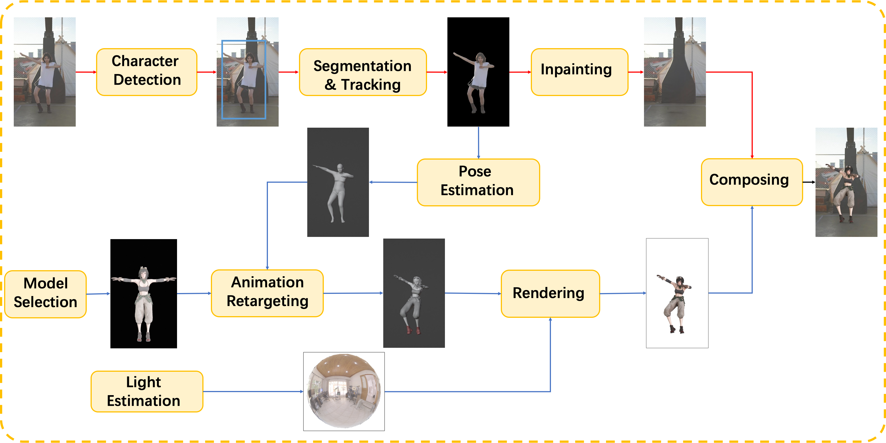

We present a framework to replace the characters in video with 3D avatars. Our framework consists of two parts: 1) a video processing pipeline to extract the inpainted background video sequence, 2) a pose estimation and rendering pipeline to generate the avatar video sequence. By parallelizing the two pipelines and using a high performance ray-tracing renderer TIDE, the whole process can be completed in minutes.
By tightly fusing the text information with the existing closed-set detectors using the transformer-based framework, zero-shot object detection can also perform well. The interested target candidates are detected by an open-set object detection method, followed by a dominant selection method to determine the final target area.
Once the target is successfully detected, the pixel-wise target area is tracked by a video object segmentation tracking method, which is initialized and refined by the widely used zero-shot segmentation method, segment anything model (SAM). Compared to directly using SAM, the temporal correspondence is promoted to better handle the video segmentation task.
The remaining image area is completed by video inpainting. Specifically, a recurrent flow completion is used to recover the corrupted flow fields, a dual-domain propagation on both the image and feature domains is adopted to enhance both global and local temporal consistency, also, a sparse strategy that considers only a subset of the tokens improves the efficiency and reduces memory consumption while maintaining performance.
Given the character video sequence, the pose estimation method CVFFS is applied to estimate stable human pose. The SMPL human body model is used to represent the 3D human body, which is a widely used parametric model for human body shape and pose estimation.
The estimated shape and pose is remapped onto the selected 3D model. Then this model can play as naturally and smoothly as the character in the original video. Satisfactory results is achieved even when there are significant differences between the original character and the new model.
When the new 3D model is replacing the interested charactor, the lighting conditions needs to be consistent with the original video. We apply lighting estimation to better integrate the new 3D model and original scene. In the future, we will also use lighting estimation for shadows.
A path tracing rendering engine TIDE is used to render the new 3D model. It is coupled with a precise material system, supplemented by algorithms such as motion blur, temporal anti-aliasing, and temporal denoising. This engine combines photorealism with speed, laying a solid foundation for users to obtain videos more efficiently.
Finally, the rendered image is composited with the original video to generate the final video.